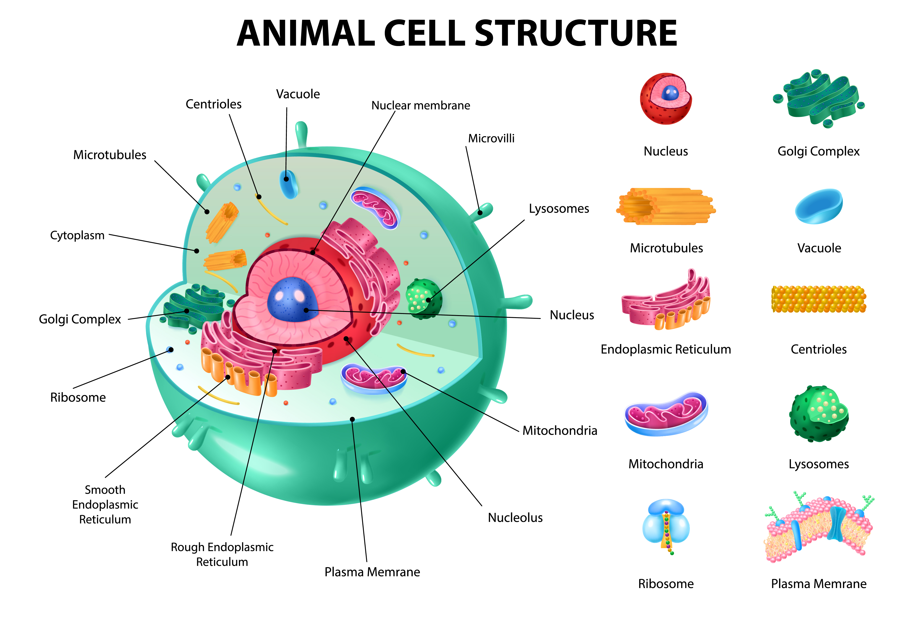

What is an Animal Cell?
An animal cell is the basic structural and functional unit of animals. It contains different cell organelles that perform specific functions necessary for the survival and growth of the organism.
Major Parts of an Animal Cell
- Cell Membrane: Controls the movement of substances in and out of the cell
- Cytoplasm: Jelly-like substance where cell activities occur
- Nucleus: Controls all activities of the cell and contains genetic material
Cell Organelles and Their Functions
| Organelle | Function |
|---|---|
| Mitochondria | Produces energy for the cell |
| Ribosomes | Protein synthesis |
| Endoplasmic Reticulum | Transport of materials |
| Golgi Apparatus | Packaging and secretion of proteins |
| Lysosomes | Digestion of waste materials |
Animal Cell Diagram
A labelled diagram of an animal cell helps in understanding the structure and location of different cell organelles.
